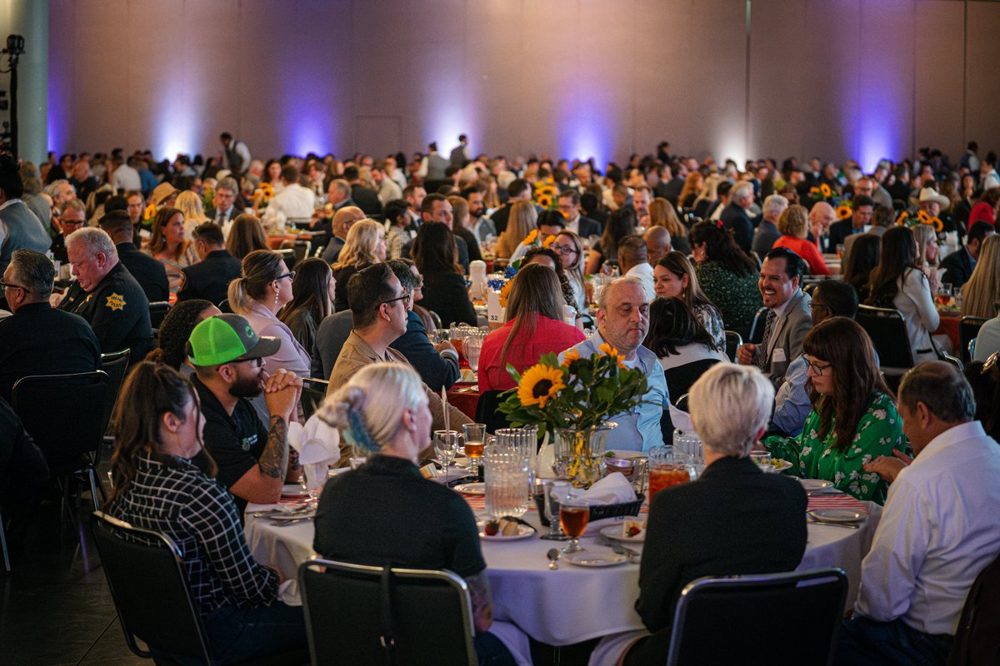
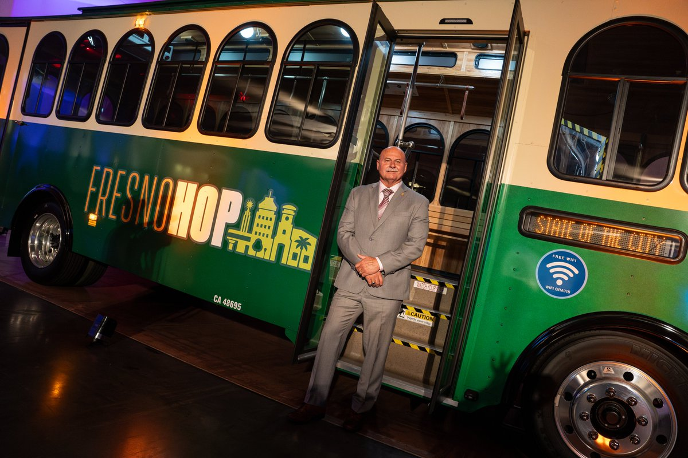

In the chair
Jan 5, 2021
Sworn in as Fresno's 26th mayor. Second term won March 2024. Sixth year running as of this page.
His own number
71%
May 9, 2024 State of the City: 14 PG&E increases since 2020, bills up 71 percent, $2.24 billion company profit the year before.
The new policy
10 years
September 2 to 4, 2026. Dyer co-sponsors a process to ban AI and cloud data centers inside city limits for a decade.
How to read this page
This is an opinion from the High Tower District with a public record attached. Dates and quoted words are sourced. The judgment is ours: a mayor who has spent six years diagnosing unaffordable power does not get to treat the city as too far gone the week a large, self-paying load arrives that can dilute the rate base. Stupidity is not a defense when the job is public safety. The heat does not wait for a better briefing.
The chair is not a spectator seat
Public safety is not only a badge and a radio. In a valley that hits 110, electricity is life support. People who cannot pay the bill do not get a philosophical seminar. They get a shutoff notice, a dark refrigerator, a house that stops being habitable, and then the street. Statewide, California's large investor-owned utilities reported 317,270 residential disconnections in 2024. PG&E has said roughly 11 percent of its residential customers were more than 60 days behind by late 2025. That is not a vibe from a Facebook thread. That is the system the mayor of Fresno is elected to fight.
Being unintelligent is not an excuse in that chair. AI exists. Spreadsheets exist. The utility's own tariff filings exist. A man who ran a police department for 18 years and then asked the city for a second mayoral term does not get to shrug and say the grid is too complicated. If the staff cannot design an answer, he can put the question in front of a model that does not need a banquet ticket. The duty is the same either way: keep people in houses that still have power.
The dates he already owns
September 2 and 3, 2021. Dyer asked the City Council to oppose a PG&E rate case. The council backed him. The city's own number that week: Fresno's average annual residential PG&E bill was $2,295, against $1,167 in San Francisco. The city itself was on the hook for about $27 million a year in gas and electric service. Dyer called the proposal unsustainable. He was right about the pain. That was year one in the chair.
October 31, 2022. City Hall press conference. Dyer said PG&E was "single-handedly destroying our local economy." Builders had waited months for transformers. He said more than 400 families could not move into finished homes because the utility had not turned the power on. Councilmember Garry Bredefeld called the company a criminal enterprise. Dyer asked for a consultant to study a city-run utility. Sacramento and San Diego were named as models. That was year two. The speech was war. The follow-through was a study that did not become a municipal power company.
May 9, 2024. State of the City. PG&E's table sat a few feet from the podium. Dyer used the room.
"I'm calling on PG&E executives to tighten their belts, as all of us are doing, and loosen up on some of those profits. This is a corporation that reported a $2.24 billion profit last year. Yes, with a 'b.' PG&E has increased rates 14 times since 2020, resulting in a 71% increase in PG&E bills. This is no longer sustainable. Enough is enough. It is time to give back to our community."
GV Wire recorded it. More than 950 people were in the hall. The speech ran 52 minutes before the prayer. That night the mayor posted podium photos and wrote that the future was bright in Fresno. The bill on La Sierra did not read the caption.

The year he sat next to the CEO
April 11, 2025. Fresno County EDC Real Estate Forecast. Dyer shared a stage with PG&E CEO Patti Poppe. He said electricity rates had risen about 56 percent over the prior three years. He said one in four Fresno families lives below the poverty line. He said PG&E profits were up 35 percent in the same stretch. He said families were choosing food or the energy bill. He said his office takes resident calls about multiple hikes a year.
Poppe said wildfire hardening drove the price. She said rates were forecast 3 percent lower in 2025 than the year before, and lower again in 2026. That is the company's line. It does not erase the decade Dyer himself put on paper later that year.
April 22, 2025. Dyer sent an opposition letter on Assembly Bill 942. He wrote that Fresno faces "some of the nation's highest energy costs." He said the city was past the halfway mark on more than 34 megawatts of municipal solar, projected to save more than $154 million over 20 years. He was willing to fight Sacramento to protect that savings. Good. Protecting a city's own panels is not the same as designing a rate base that keeps a renter on Olive from losing the AC.
November 7, 2025. The CPUC held a rate hearing in Fresno. Centro La Familia told the room that utility help had become one of the most urgent needs they see. Spokesperson Maria Cortez: families were afraid to turn on air conditioners in 110-degree heat because they knew they could not afford the bill that would follow. Dyer submitted a letter. He said he had met PG&E multiple times. He said average residential electricity rates had increased between 92 and 121 percent over the prior ten years. The judge read it into the record. Then the process moved on a 2027 decision clock.

What the utility said while the city prepared a ban
February 18, 2026. ABC30. PG&E said it would not let AI data centers raise Central Valley power bills. Local spokesman Jeff Smith: the companies that profit from the centers should fund the infrastructure before it is built. Other customers are not supposed to be on the hook. That policy sits in Rule 30.
PG&E's own pages and earnings calls in 2025 and 2026 repeated a specific claim: each new gigawatt of data-center demand can reduce the average household bill by about 1 to 2 percent over time because fixed grid costs get spread across more sales. On February 17, 2026, and again in September 2026 coverage, CEO Patti Poppe said large-load growth had already helped PG&E cut electric rates for the fourth time in two years, about 11 percent since 2024. She still blamed wildfire policy for the remaining pain. Hold both facts. The company is not a charity. It is also not saying what the ban assumes.
March 10, 2026. Next 10 published Curtail to Compute, led by University of Pennsylvania researchers. Statewide curtailment of renewable power rose 23 percent from 2023 to 2024. The wasted energy could have powered 500,000 California homes for a year. More than 70 percent of that waste was congestion, not surplus. The worst pocket in the study is PG&E's Fresno Zone. Path 15, the corridor through rural Fresno County, is projected to be congested more than 7,300 hours a year by 2039. That is about 84 percent of the hours in a year. A modeled 20-megawatt rural Fresno County data center could run on local solar about 54 percent of the year and cost about $94 million less to build than a Santa Clara twin, because land here is not $2.5 million an acre.
Read that twice. The valley is already throwing sunlight away. Households in 93728 are paying some of the highest effective residential rates in the country for the privilege. The study said move the computers to the stranded power. China already wrote a version of that idea into national policy. East Data, West Computing parks training load in remote regions with cheap clean power. New data centers at national hub nodes are supposed to take 80 percent of their electricity from renewables. That is not a Facebook meme. It is a published standard. Fresno has the wasted sun and the high bill. The mayor's move was to lock the city out of the load.
September 2026: the speech becomes a prohibition
September 2, 2026. Councilmember Nick Richardson's item. Dyer joins as co-sponsor that afternoon. His office statement:
"We must make thoughtful decisions about how we use our limited land, water, and energy resources, and those decisions must provide the greatest possible benefit to Fresno residents."
Same day, longer statement: data centers "are not an appropriate land use for the City of Fresno under current technologies and are not allowed within city limits." Staff, he said, was already drafting code to prohibit them, including in SEDA. To ABC30 he said he had come to the conclusion they are probably not the best use of land. Reasons: water, electricity, grid impact, acreage, few permanent jobs.
September 3 and 4, 2026. Council votes 7-0 to start the process. The amendment would define AI and cloud data centers and prohibit them as an allowed use for ten years, then keep the ban unless a future council undoes it. Staff said four to eight months of process before it could take effect. Dyer said he planned a separate development-code change for December.
Water is a real constraint. Jobs per acre is a real question. None of that requires pretending the electricity argument is the one he has been making since 2021. If the fear is gallons, write a gallons rule. If the fear is a dead industrial park with twelve technicians and a fence, write a jobs-per-acre rule and a community-benefit tariff. A decade-wide ban on the load class the utility says can lower household bills, in the zone with the worst solar curtailment in California, is how a city converts six years of speeches into a guarantee that the speeches never become a bill.
The Tower District already paid part of this lecture
This neighborhood runs air conditioners because the alternative is heat stroke. CARE customers still get the full-rate surprise when the enrollment computer fails. The District already wrote that meter in The Quiet Overcharge and in From 21 Screens to Bed Fort. One retired engineer in a 12-by-12 room cut a wall of screens because fifty cents a kilowatt-hour stopped being theoretical. That is not a data-center brochure. That is a house on La Sierra living inside the rate Dyer has been naming since his first year.
Do not blame the model. Blame the chair.
A comment made the rounds this week: capitalists want to pin the power bill on AI, while China parks compute next to remote renewables and writes an 80 percent clean-power rule. The local version is worse than that meme. Fresno's mayor spent six years correctly describing the household emergency. Then, when the one industrial customer that can show up with its own interconnection check and eat curtailed valley solar arrived in the conversation, the city moved to outlaw it for a decade.
AI did not raise your bill in 2021. AI did not cancel the transformer crews in 2022. AI did not write AB 1054, or the wildfire fund, or the 14 rate changes Dyer counted on May 9, 2024. People in chairs did that. People in chairs also decide whether a new large load is designed as a parasite on the poor or as a credit against the fixed costs those same poor already carry. That is a design problem. Design problems are what elected executives are paid to solve.
If the current staff cannot run the numbers, the mayor has no remaining excuse. The tools exist. He can require any proposed center to pay interconnection up front, to take a defined share of otherwise-curtailed local solar, to post a water cap with automatic shutoff of new load if the cap is hit, and to write a household credit that shows up on CARE and FERA bills first. He can put that term sheet in front of an engineer and in front of a model in the same afternoon. What he cannot do is keep the 71 percent speech in the clip reel and then tell the public the only adult move is a ban.
Public safety includes the house that still has a working outlet in August. People are already being pushed toward the street by bills they cannot pay. Some lose power. Some lose water. The city itself reported 6,672 residential water shutoffs in 2025. Electricity shutoffs statewide are in the hundreds of thousands. You do not get to call that someone else's utility while you occupy the only local executive office that can change land use, lobby the CPUC, and design the incentive.
Enough was enough on May 9, 2024. It was already enough on September 3, 2021. It was already enough on October 31, 2022. A ban on the load that can dilute the rate base is not toughness. It is the confession that the chair learned how to describe the fire and never learned how to put water on it.
Sources
- City of Fresno, Office of the Mayor. Swearing-in January 5, 2021. Second term, March 2024. fresno.gov/mayor.
- GV Wire, David Taub. "Dyer Points to 27 Million Reasons Fresno Opposes PG&E Rate Hike." September 3, 2021. Fresno average annual bill $2,295 vs San Francisco $1,167.
- KMPH / FOX26 and SJV Sun. October 31, 2022 City Hall presser. "Single-handedly destroying our local economy." 400 families waiting on power. Municipal-utility study.
- GV Wire, David Taub. "Dyer Calls out PG&E During State of the City Speech." May 9, 2024. 14 increases since 2020, 71 percent, $2.24 billion profit.
- @MayorJerryDyer, May 9 to 10, 2024. State of the City podium, banquet, and trolley photographs used on this page.
- The Business Journal / NewsBreak. April 11, 2025. Dyer and Patti Poppe. 56 percent over three years. One in four below poverty. Food or the energy bill.
- GV Wire. April 23, 2025. Dyer letter on AB 942. "Nation's highest energy costs." 34 MW city solar, $154 million projected savings.
- Fresnoland. November 7, 2025 CPUC hearing in Fresno. Centro La Familia on 110-degree fear. Dyer letter: 92 to 121 percent over ten years.
- ABC30. February 18 to 19, 2026. "Data Land USA." PG&E on Rule 30 and Central Valley bill protection.
- Next 10 / University of Pennsylvania. Curtail to Compute. March 10, 2026. Fresno Zone curtailment. Path 15. 20 MW rural model.
- PG&E and Utility Dive. 2025 to September 24, 2026. Large-load pipeline. 1 to 2 percent bill reduction per gigawatt. CEO on an 11 percent cut since 2024 aided by data-center growth.
- The Fresno Bee, Melissa Montalvo. September 2 and 4, 2026. Ten-year ban item. Dyer co-sponsor statements. 7-0 process vote.
- KSEE / YourCentralValley and ABC30. September 2, 2026. Dyer on land, water, electricity, jobs.
- CPUC record. Large IOUs reported 317,270 residential disconnections in 2024. PG&E workshop figures on arrears, 2025 to 2026.
- City of Fresno Finance. 2025 residential water shutoffs = 6,672.
- Oxford Institute for Energy Studies and NDRC / National Data Administration materials, 2024 to 2025. East Data, West Computing. 80 percent renewable obligation for new national-hub data centers.
- Related High Tower District files: stories.ahightower.com/pge-strap, /pge-care-factual-story.html, /personal-setup-story.html.
Close
The High Tower District does not need another banquet quote. It needs a rate that a household can survive in August. If the mayor wants to prove the ban is wisdom, he can publish the term sheet he refused to write: interconnection paid up front, curtailed local solar taken first, water capped, CARE bills credited. Until that page exists, the record is simple. He had the dates. He had the microphone. He had six years. The meter is still the one doing the governing.